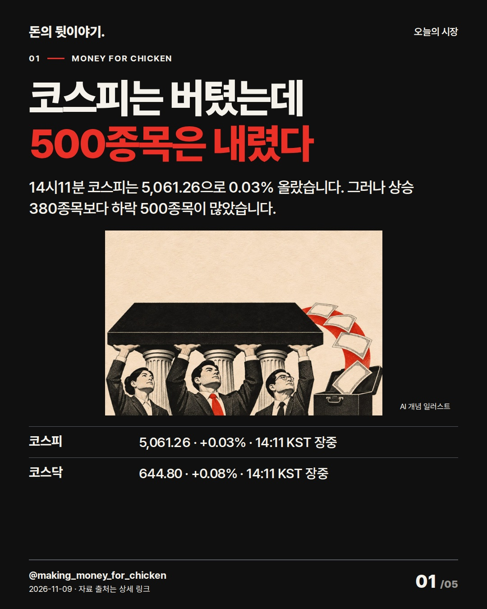
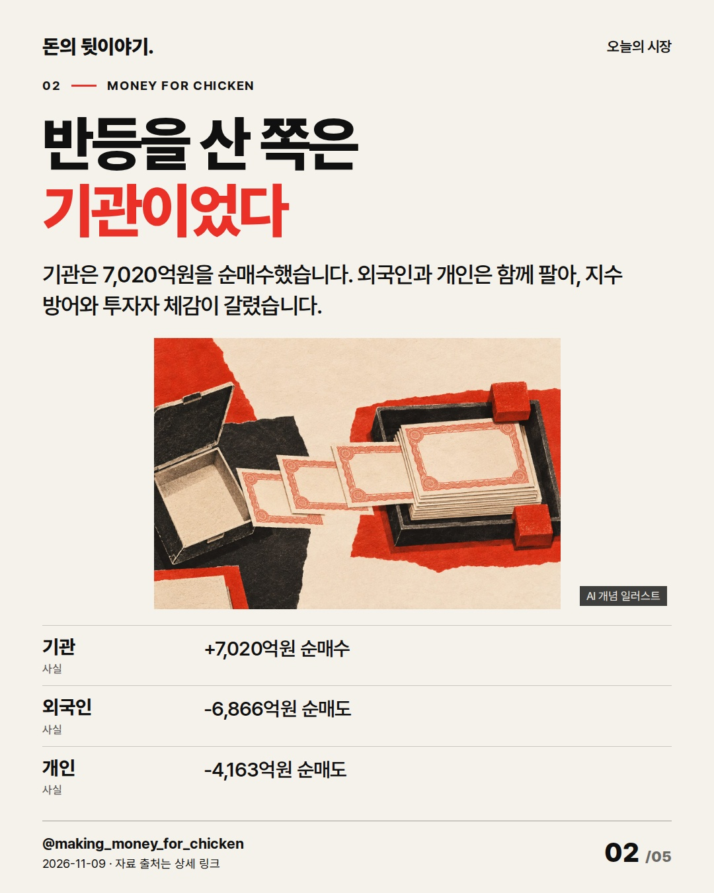
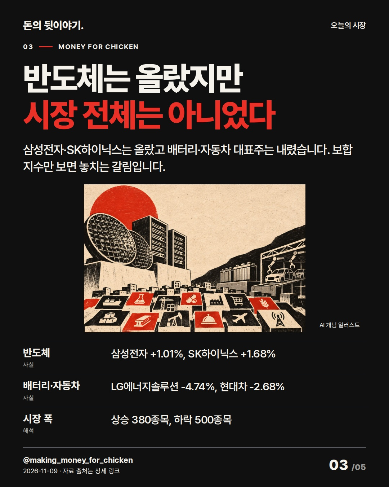
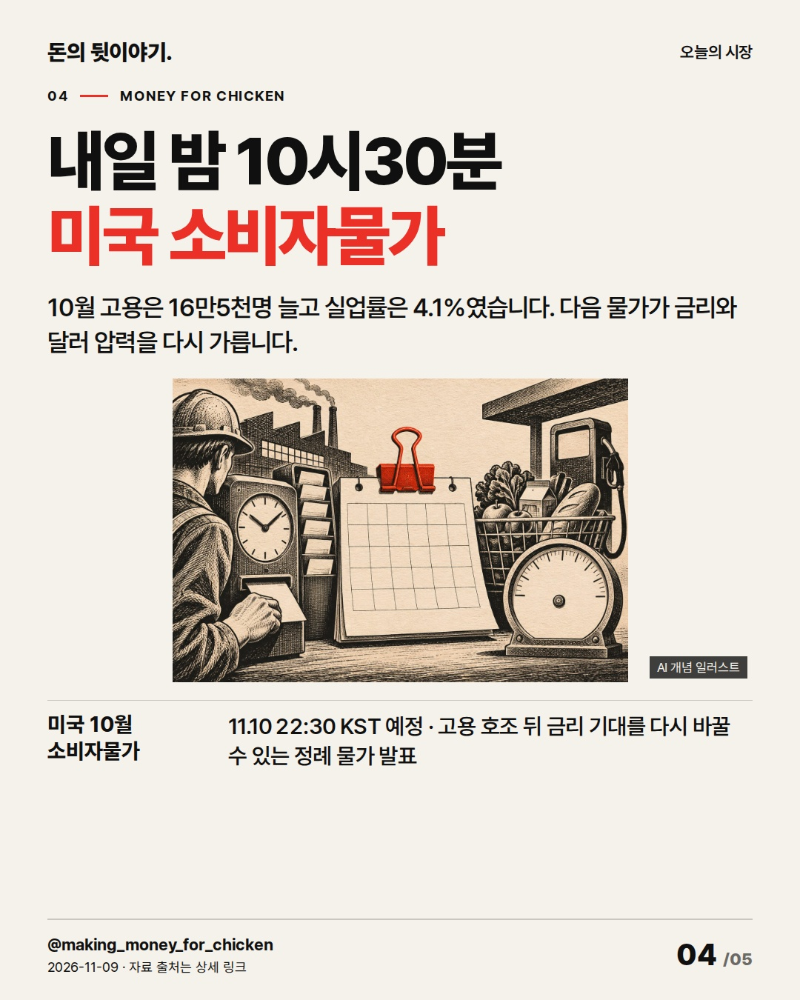
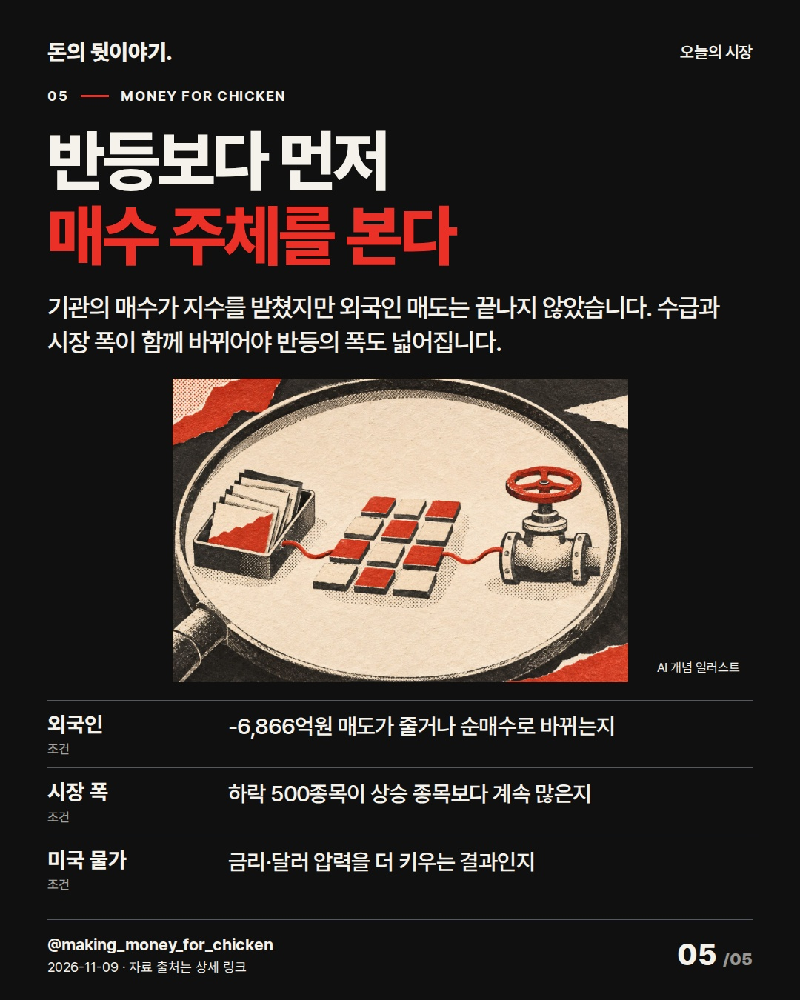

코스피는 버텼는데
500종목은 내렸다
코스피는 보합권을 지켰지만 하락 종목이 더 많았습니다. 기관이 받은 물량과 외국인 매도, 내일 밤 미국 물가까지 한 흐름으로 봤습니다. #코스피 #외국인수급 #미국CPI
코스피는 버텼는데
500종목은 내렸다

14시11분 코스피는 5,061.26으로 0.03% 올랐습니다. 그러나 상승 380종목보다 하락 500종목이 많았습니다.
- 코스피: 5,061.26 · +0.03% · 14:11 KST 장중
- 코스닥: 644.80 · +0.08% · 14:11 KST 장중
AI 생성 개념 일러스트 · 실제 현장이나 공식 제품 사진이 아닙니다.반등을 산 쪽은
기관이었다

기관은 7,020억원을 순매수했습니다. 외국인과 개인은 함께 팔아, 지수 방어와 투자자 체감이 갈렸습니다.
- 기관: +7,020억원 순매수
- 외국인: -6,866억원 순매도
- 개인: -4,163억원 순매도
AI 생성 개념 일러스트 · 실제 현장이나 공식 제품 사진이 아닙니다.반도체는 올랐지만
시장 전체는 아니었다

삼성전자·SK하이닉스는 올랐고 배터리·자동차 대표주는 내렸습니다. 보합 지수만 보면 놓치는 갈림입니다.
- 반도체: 삼성전자 +1.01%, SK하이닉스 +1.68%
- 배터리·자동차: LG에너지솔루션 -4.74%, 현대차 -2.68%
- 시장 폭: 상승 380종목, 하락 500종목
AI 생성 개념 일러스트 · 실제 현장이나 공식 제품 사진이 아닙니다.내일 밤 10시30분
미국 소비자물가

10월 고용은 16만5천명 늘고 실업률은 4.1%였습니다. 다음 물가가 금리와 달러 압력을 다시 가릅니다.
- 미국 10월 소비자물가: 11.10 22:30 KST 예정 · 고용 호조 뒤 금리 기대를 다시 바꿀 수 있는 정례 물가 발표
AI 생성 개념 일러스트 · 실제 현장이나 공식 제품 사진이 아닙니다.반등보다 먼저
매수 주체를 본다

기관의 매수가 지수를 받쳤지만 외국인 매도는 끝나지 않았습니다. 수급과 시장 폭이 함께 바뀌어야 반등의 폭도 넓어집니다.
- 외국인: -6,866억원 매도가 줄거나 순매수로 바뀌는지
- 시장 폭: 하락 500종목이 상승 종목보다 계속 많은지
- 미국 물가: 금리·달러 압력을 더 키우는 결과인지
AI 생성 개념 일러스트 · 실제 현장이나 공식 제품 사진이 아닙니다.자료 출처
- 네이버 금융 · 코스피 실시간 지수 · 2026-11-09 14:11 KST; 코스피 5,061.26, 전일 5,059.69 대비 +0.03% · 조회 2026-11-09T14:12:29+09:00
- 네이버 금융 · 코스닥 실시간 지수 · 2026-11-09 14:11 KST; 코스닥 644.80, 전일 644.27 대비 +0.08% · 조회 2026-11-09T14:12:29+09:00
- 네이버 금융 · 코스피 장중 수급·시장 폭 · 2026-11-09 장중; 기관 +7,020억원, 외국인 -6,866억원, 개인 -4,163억원; 상승 380·하락 500 · 조회 2026-11-09T14:13:58+09:00
- 네이버 금융 · 주요 시가총액 종목 장중 시세 · 2026-11-09 14:13 KST; 삼성전자 +1.01%, SK하이닉스 +1.68%, LG에너지솔루션 -4.74%, 현대차 -2.68% · 조회 2026-11-09T14:13:58+09:00
- 연합뉴스 · 코스피 5천선 공방 뒤 장중 반등 · 2026-11-09 11:13 KST; 장중 5,000선 이탈 뒤 기관 매수와 반도체 반등 보도 · 조회 2026-11-09T14:02:00+09:00
- Reuters · 아시아 증시 반등과 미국 금리 기대 · 2026-11-09; 미국 고용 호조 뒤 금리 인상 기대와 달러 강세, 아시아 증시 반등 · 조회 2026-11-09T14:02:30+09:00
- 미국 노동통계국 · 2026년 10월 고용보고서 · 2026-11-06 08:30 EST 발표; 비농업 고용 +16만5천명, 실업률 4.1% · 조회 2026-11-09T14:03:00+09:00
- 미국 노동통계국 · 2026년 11월 발표 일정 · 2026-11-10 08:30 EST; 10월 소비자물가 발표 예정 · 조회 2026-11-09T14:03:30+09:00
- 불스토리 · 외국인 매도에도 개인·기관이 지킨 증시 (편집 참고) · 2026-05-23 공식 사이트 본문·FAQ 전체 열람; Instagram 실제 카드는 미열람 · 조회 2026-11-09T14:04:00+09:00
- 홍춘욱 · 외국인이 한국 주식을 매입하는 이유 (편집 참고) · 2019-01-23 필자명과 공개 원문 본문 전체 열람; 현재 시장 사실 근거로 사용하지 않음 · 조회 2026-11-09T14:04:30+09:00
- Morning Brew · Hot jobs summer (편집 참고) · 2026-09-05 공개 뉴스레터 전체 열람; 고용 결과→금리 기대→다음 물가의 순서 확인 · 조회 2026-11-09T14:10:30+09:00
- Bloomberg · AI Stocks Rebound After Tech Selloff (편집 참고) · 2026-11-06 공개 검색 제목·요약만 확인; 본문 전체는 접근 불가 · 조회 2026-11-09T14:10:30+09:00
편집 기록
{
"improvement": "최근 5편은 장중 반전율과 마지막 확인 목록이 반복됐습니다. 이번에는 ‘보합 지수 아래에서 누가 팔고 누가 받았나’를 한 축으로 잡아, 지수와 체감이 다른 이유를 돈의 이동으로 설명했습니다.",
"reason": "불스토리 공식 사이트의 수급 글은 본문·FAQ 전체를 읽었고 Instagram 카드는 보지 못했습니다. 홍춘욱의 필자 표시 원문 전체는 외국인 수급을 한 숫자로 단정하지 않고 반대 설명을 거르는 방식을 참고했습니다. Morning Brew는 공개 뉴스레터 전체, Bloomberg는 제목·요약만 확인했습니다.",
"application": "초안 ‘코스피 급락 뒤 반등’→퇴고 ‘코스피는 버텼는데 500종목은 내렸다’. 2장에서 기관 +7,020억원과 외국인·개인 매도를 맞붙였고, 3장에서 반도체 상승과 배터리·자동차 하락을 시장 폭에 연결했습니다.",
"avoided_repetition": "‘외국인 매도 끝’은 실제 -6,866억원과 반대라 버렸고 ‘반도체가 시장을 살렸다’도 하락 500종목을 가려 제외했습니다. 11/5의 지수 가중치 설명과 11/2의 외국인 복귀 목록을 반복하지 않았습니다. 다음 편은 종가 기준 수급과 시장 폭의 지속성을 비교합니다. 반응 지표는 미확보입니다."
}투자 참고용 · 매수·매도 권유 아님.